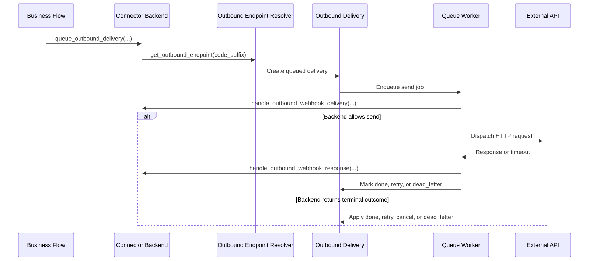

Let connector backends own outbound delivery without rebuilding the same glue layer.
Connector-ready outbound glue for backend-owned delivery flows.
Outcomes
Audience
Capabilities
How it works
The outbound glue addon keeps routing and delivery ownership on the backend while the shared framework handles queueing, retries, and delivery state changes around it.

Outbound endpoint routing by connector backend
Technical proof
The technical section below surfaces routing and dispatch flow so evaluators can inspect how backend ownership, endpoint resolution, and framework-managed delivery fit together.

Connector outbound dispatch sequence
Rollout
A typical rollout keeps outbound ownership on the backend while the framework manages delivery and recovery around it.
Looking for a faster path to live outbound connectors? Pair this glue layer with premium connector modules such as Stripe when you want a more turnkey rollout.